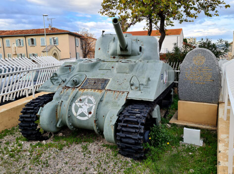

Le général de Lattre de Tassigny dirigeait une armée exceptionnelle et cosmopolite. Composée de tirailleurs sénégalais, algériens, marocains, de zouaves et de pieds-noirs, cette armée a montré une ténacité incroyable. C'était la première fois qu'une armée majoritairement française reprenait le contrôle d'une si grande partie de son propre sol.
La libération de Toulon et de Marseille reste l'un des plus grands exploits tactiques de cette campagne. La prise de ces deux ports stratégiques a été le point de bascule permettant d'acheminer le carburant et les munitions nécessaires pour la libération finale de l'Europe.
Découvrez les témoignages de l'époque : Archives de la Résistance